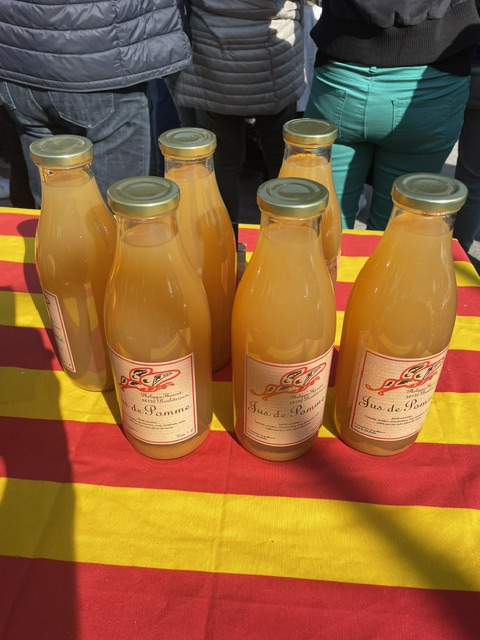

Pommes & jus de pomme
Des pommes du verger, pressées en pur jus sans sucre ajouté. Pommes fraîches aussi, en saison.
Chaque miel vient d'un coin précis du Roussillon et d'un moment de l'année. Survolez la carte pour voir où butinent les abeilles — et repérez la miellerie, notre point de vente.
Butiné de mi-février à début mai dans les garrigues où ne poussent que le romarin et le thym. Contrairement à la plante, à l'odeur puissante, le miel est d'une finesse extraordinaire et d'une saveur incomparable.
La lavande stœchas, dite « lavande papillon », propre aux Pyrénées-Orientales, fleurit de mars à mai et sent le thym — elle n'a rien de la lavande officinale. Le miel en tire une saveur délicate et suave, avec un beau parfum de garrigue. Un miel rare et recherché.
Butiné sur les garrigues sèches et arides de Boule d'Amont : bruyère blanche, ciste cotonneux, chêne vert. Un miel au goût rustique et sauvage, un peu caramel ou pain d'épices, qui cristallise naturellement en une texture crémeuse.
Récolté début août dans les gorges du Boulès, entre Bouleternère et Amélie-les-Bains, là où les fleurs sauvages se mêlent au châtaignier. Un miel mi-garrigue mi-montagne, avec beaucoup de corps et de caractère, teinté d'une subtile amertume.
Récolté fin septembre à Boule d'Amont, essentiellement sur la bruyère callune. Un miel à la saveur douce-amère, particulièrement recherché des connaisseurs avertis.
Butiné du côté de Sahorre et de Nyer. On y retrouve la bruyère blanche, l'acacia, le trèfle blanc et les fleurs de prairie. Un miel liquide et très parfumé.
Récolté début août sur les montagnes de Nyer (1200 m) et de Sahorre : ronces, aubépines, framboisiers, tilleuls et fleurs de prairie sauvages, avec un soupçon de châtaignier.
Récolté début août dans la vallée d'Eyne (1800 m), face à Font-Romeu. Dans cette vallée totalement inculte poussent un millier de plantes sauvages (rhododendron, sapin) qui donnent au miel une saveur exquise et un vrai parfum de haute montagne.
Nos abeilles butinent aussi les vergers d'avocatiers cultivés par la famille, en Roussillon. Il en naît un miel rare : ambré foncé, rond, avec des notes maltées. Une production très locale et limitée. · les vergers ↗
Chaque miel est produit en quantité limitée, selon ce que les abeilles récoltent dans l'année. La disponibilité varie donc au fil de la saison.
À côté des ruches, le verger et les oliviers donnent le reste de la saison. Tout vient de l'exploitation.
Des pommes du verger, pressées en pur jus sans sucre ajouté. Pommes fraîches aussi, en saison.

De nos oliviers, extraite au fil de la récolte d'automne.

Amandes du verger, récoltées à la fin de l'été.
Chaque produit a sa saison. Voici, mois par mois, quand les miels et les fruits sont récoltés.
Le miel se conserve : on en a toute l'année, dans la limite des stocks. Ce calendrier montre quand chaque produit est récolté — les dates sont indicatives et varient avec la météo.
Vous achetez sur place, à la personne qui conduit les ruches.
Récolté au naturel, au rythme de la colonie, sans standardisation.
Tout vient du Roussillon, au fil des floraisons et des récoltes.
Retrouvez-nous à la miellerie, à Bouleternère — ou soyez prévenu dès qu'un nouveau miel ou un produit de saison arrive.